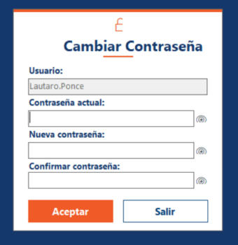

Inicio › Usuario › Cambiar contraseña
Cambiar contraseña
Sirve para cambiar tu contraseña por una nueva. También aparece solo la primera vez que entrás, cuando tenés una contraseña temporal.
Dónde está: Usuario › Cambiar contraseñaLo usa: Todos los usuariosAtajo: F1
Pasá el mouse por encima de cualquier botón o campo de la pantalla para ver qué hace.

Qué hace cada elemento
- 1UsuarioMuestra tu nombre de usuario. Está bloqueado: no se puede escribir acá.
- 2Contraseña actualEscribí la contraseña con la que entraste al sistema. Si es tu primer ingreso, es la temporal que te dieron.
- 3Nueva contraseñaEscribí la contraseña nueva. Tiene que tener al menos 8 caracteres, una mayúscula y una minúscula.
- 4Confirmar contraseñaVolvé a escribir la contraseña nueva, igual que arriba, para evitar errores de tipeo.
- 5Ver contraseñaEl ojo de cada campo muestra u oculta lo que escribiste, para que puedas revisarlo.
- 6AceptarGuarda la contraseña nueva y cierra la pantalla. También se activa con Enter desde el último campo.
- 7SalirCierra la pantalla sin cambiar nada.
Cómo hacerlo
Lleva menos de un minuto.
- Abrí el menú Usuario y elegí Cambiar contraseña.
- Escribí tu contraseña actual.
- Escribí la nueva contraseña y repetila en Confirmar contraseña. Con Enter pasás de un campo al siguiente.
- Tocá Aceptar. Cuando aparece el mensaje de éxito, la pantalla se cierra sola.
Tené en cuenta: La próxima vez que entres al sistema, usá la contraseña nueva.
Si el administrador te creó el usuario, entrás con una contraseña temporal y el sistema te pide cambiarla.
- Ingresá con tu usuario y la contraseña temporal (tu apellido seguido del DNI).
- Aparece el aviso de cambio requerido: aceptalo.
- Completá esta pantalla con la temporal como contraseña actual y elegí una nueva.
- Tocá Aceptar.
Tené en cuenta: Hasta que no la cambies, el sistema no te deja avanzar.
Para saber más
Mensajes que puede mostrar el sistema 8
| Mensaje | Qué significa y qué hacer |
|---|---|
| AvisoLa contraseña debe tener al menos 8 caracteres. | Agregá más caracteres. |
| AvisoLa contraseña debe contener al menos una letra mayúscula / minúscula. | Agregá una letra mayúscula y una minúscula. |
| AvisoLa nueva contraseña y la confirmación no coinciden. | Escribí las dos iguales. Usá el ojo para revisar lo que tipeaste. |
| AvisoLa nueva contraseña no puede ser igual a la actual. | Elegí una distinta. |
| AvisoLa contraseña actual es incorrecta. | Revisá la contraseña actual. Si no la recordás, pedile ayuda a un administrador. |
| ListoContraseña cambiada exitosamente. | Listo: usá la nueva la próxima vez que ingreses. |
| ErrorNo hay sesión activa. / No se pudo obtener el usuario de la sesión. | Cerrá el sistema y volvé a entrar. |
| ErrorOcurrió un error inesperado al cambiar la contraseña. | No se cambió nada. Probá de nuevo; si se repite, avisale al administrador. |
Reglas a tener en cuenta 4
- La contraseña nueva necesita 8 caracteres como mínimo, con al menos una mayúscula y una minúscula.
- La contraseña nueva no puede ser la misma que la actual.
- Las contraseñas se guardan cifradas: nadie, ni el administrador, puede verlas.
- El cambio queda registrado en la Bitácora de eventos.
SneakRush · Ayuda del sistema · Cambiar contraseña. Podés abrir esta ayuda desde cualquier pantalla con la tecla F1.